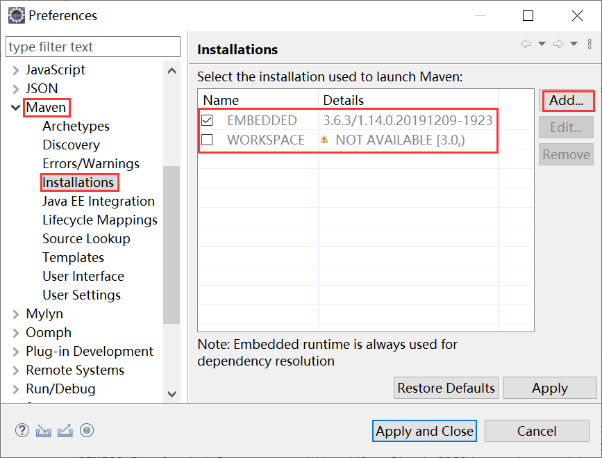
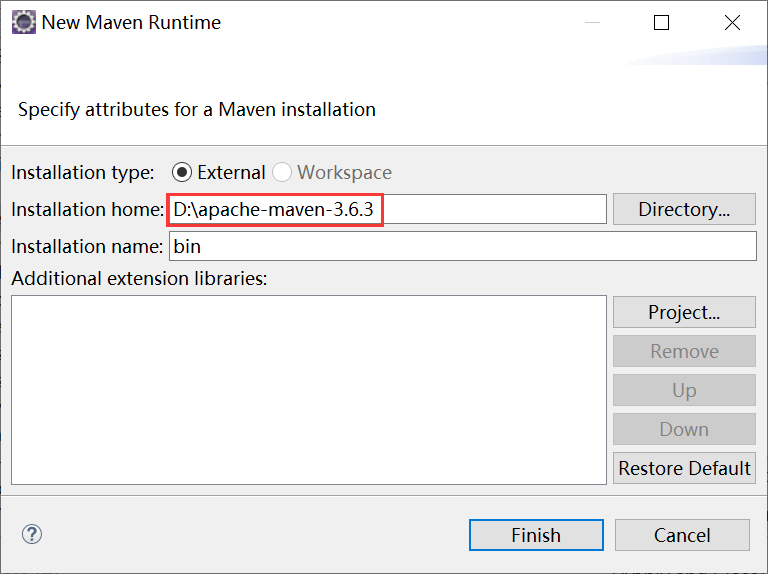
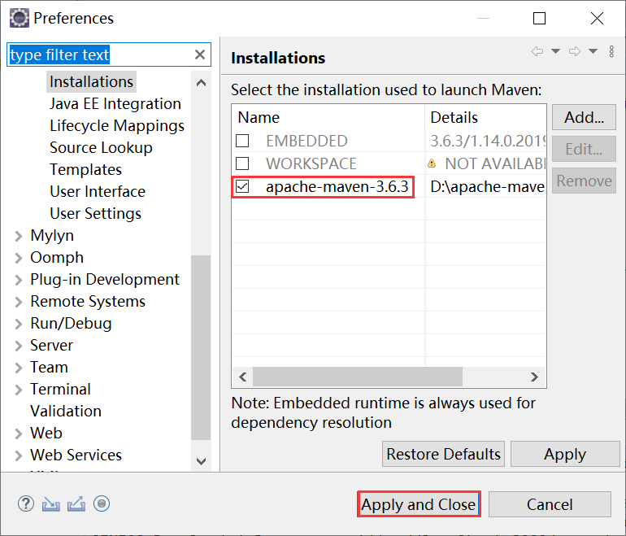
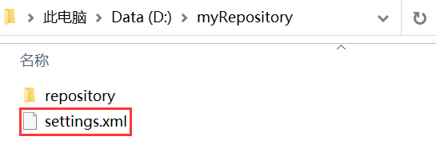
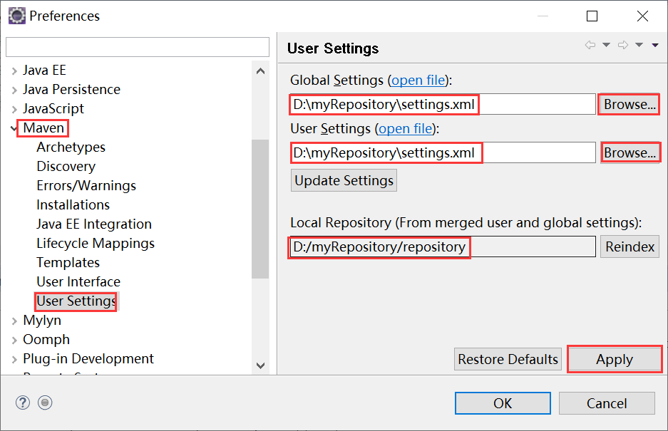

Eclipse配置Maven
前面所涉及的 Maven 项目结构和代码都十分的简单，即使是使用最简单的文本编辑器也能够很快就能完成。但在实际的开发过程中，我们所涉及的 Maven 项目往往要复杂得多，此时我们就需要借助 IDE（集成开发环境） 来帮助我们完成开发工作。
当今最流行的 Java IDE 主要有 2 种：Eclipse 和 IntelliJ IDEA，其中 eclipse 是完全免费的，用户不用花一分钱就能使用，而且基本能够满足用户所有的开发需求。
m2eclipse 的主要功能如下：
使用 Eclipse 中内嵌的 Maven 存在 2 个风险：
为了规避以上 2 个风险，我们在 Eclipse 中配置 Maven 时，通常使用与命令行版本一致的 Maven（通常是本地安装的 Maven ），操作步骤如下。
1）在 Eclipse 中点击 Windows 菜单，然后选择 Preferences。在弹出的对话框中，展开 Maven 选项，选择 Installation 子项，在右侧的面版中可以看到有一个默认的 EMBEDDED Maven 被选中了，如图 1 所示。
2）点击右侧的 Add 按钮，在弹出的对话框中，选择本地 Maven 安装目录，然后点击 Finish，如图 2 所示。
3）返回上一级对话框，选择刚刚添加的本地 Maven，然后点击 Apply and Close 按钮，保存设置并返回 Eclipse 首页，如图 3 所示。
1）在 D 盘中创建一个名称为 myRepository （该目录名称为自定义）的目录，然后在该目录中再创建一个名为 repository（一般定义为此名称）的目录。
2）在 Maven 安装路径\config 目录下的 setting.xml 中添加如下配置，修改本地仓库位置为刚刚创建的目录。
3）复制 setting.xml 文件到 D:\myRepository 目录中，如下图所示。
4）在 Eclipse 中 ，选择 Maven 项下 User Settings 子项，并分别点击 Global Settings 和 User Settings 的 Browses... 按钮，将它们都修改为新的本地仓库的 setting.xml，可以看到下面的 Local Repository 自动更新为新的本地仓库地址，最后点击 Apply 按钮。
自此我们就完成了在Eclipse 中配置 Maven 的全部步骤。
当今最流行的 Java IDE 主要有 2 种：Eclipse 和 IntelliJ IDEA，其中 eclipse 是完全免费的，用户不用花一分钱就能使用，而且基本能够满足用户所有的开发需求。
m2eclipse
Eclipse 提供了很多实用的插件，例如 FindBugs、Spring IDE、m2eclipse 等等。m2eclipse 是一款将 Maven 集成到 Eclipse 中的插件，通过它用户可以很方便地在 Eclipse 中执行 Maven 命令、创建 Maven 项目、修改 POM 等。m2eclipse 的主要功能如下：
- 创建和导入 Maven 项目
- 管理依赖并与 Eclipse 的 classpath 集成
- 自动下载依赖
- 自动解析依赖
- 使用 Maven 模板（Maven Archetype）创建项目
- 浏览和搜索远程仓库中内容
- 可视化管理 POM 文件
- 图形化依赖分析
由于现在 Eclipse 基本上都默认安装了 m2eclipse ，所以我们不需要自行安装该插件。
在 Eclipse 中配置 Maven
Eclipse 基本上都默认内嵌了一个 Maven，这个内嵌的 Maven 通常都比较新，且往往与命令行中使用的 Maven（即本地安装的 Maven）版本不一致。使用 Eclipse 中内嵌的 Maven 存在 2 个风险：
- 新版本的 Maven 往往不够稳定，容易出现一些意想不到的错误；
- 使用命令行与 Eclipse 构建的过程或结果不一致。
为了规避以上 2 个风险，我们在 Eclipse 中配置 Maven 时，通常使用与命令行版本一致的 Maven（通常是本地安装的 Maven ），操作步骤如下。
1）在 Eclipse 中点击 Windows 菜单，然后选择 Preferences。在弹出的对话框中，展开 Maven 选项，选择 Installation 子项，在右侧的面版中可以看到有一个默认的 EMBEDDED Maven 被选中了，如图 1 所示。

图1：Eclipse 配置 Maven
2）点击右侧的 Add 按钮，在弹出的对话框中，选择本地 Maven 安装目录，然后点击 Finish，如图 2 所示。

图2：添加运行时 Maven
3）返回上一级对话框，选择刚刚添加的本地 Maven，然后点击 Apply and Close 按钮，保存设置并返回 Eclipse 首页，如图 3 所示。

图3：选择本地 Maven
修改本地仓库位置
我们知道 Maven 能够管理各种构件，当用户需要使用某个构件时，Maven 会从远程公共仓库中进行下载到本地仓库中。Maven 本地仓库默认被创建在 C 盘的 %USER_HOME% 目录下，当本地仓库中构件数量足够多时，会占用 C 盘大量的空间，导致操作系统卡顿。因此，通常情况下我们都会修改本地仓库的位置，操作步骤如下。1）在 D 盘中创建一个名称为 myRepository （该目录名称为自定义）的目录，然后在该目录中再创建一个名为 repository（一般定义为此名称）的目录。
2）在 Maven 安装路径\config 目录下的 setting.xml 中添加如下配置，修改本地仓库位置为刚刚创建的目录。
<localRepository>D:/myRepository/repository</localRepository>
3）复制 setting.xml 文件到 D:\myRepository 目录中，如下图所示。

图4：本地仓库目录结构
4）在 Eclipse 中 ，选择 Maven 项下 User Settings 子项，并分别点击 Global Settings 和 User Settings 的 Browses... 按钮，将它们都修改为新的本地仓库的 setting.xml，可以看到下面的 Local Repository 自动更新为新的本地仓库地址，最后点击 Apply 按钮。

图5：在 Eclipse 中修改本地仓库位置
自此我们就完成了在Eclipse 中配置 Maven 的全部步骤。
在 Eclipse 中使用 Maven
配置好 Maven 环境以后，就可以在 Eclipse 中使用 Maven 了，我们将在以下几节中详细讲解：关注公众号「站长严长生」，在手机上阅读所有教程，随时随地都能学习。内含一款搜索神器，免费下载全网书籍和视频。

微信扫码关注公众号